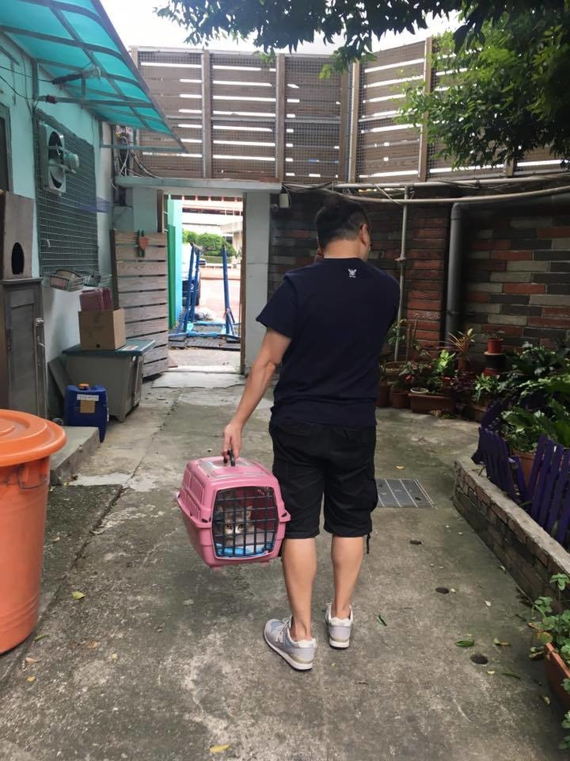
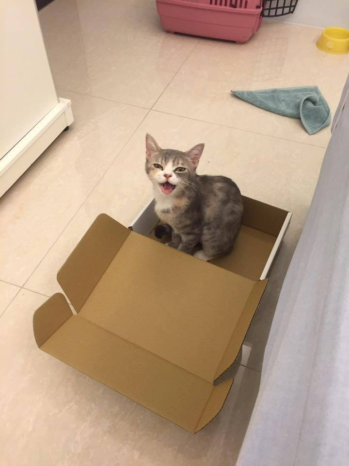
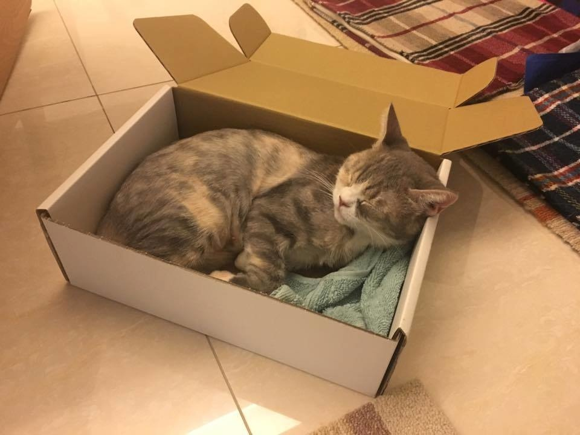

養貓這件事大概是去年10月開始萌芽的
有了念頭，這半年多開始爬文做功課
期間我也加了很多中途的粉絲團，甚至也填過認養資料
去過認養活動現場，但最終都是跟小貓無緣收場。
因為卡卡，所以我特別謹慎我最不希望就是養了貓反而讓卡卡覺得不開心
（最高原則，絕不能找一個生氣會揍哥哥的小貓啊 XD）
所以非常謝謝婗婗願意讓我安親，讓我實際感受有貓一起的生活
也觀察卡卡對於貓咪存在的反應是什麼
因為安親婗婗也確定我們家不能有小狗，但可以有小貓 XD
8月初因為朋友分享了待認養小貓的訊息，所以我們去了明志貓貓俱樂部
當天，老師跟志工聽完我的需求（能適應狗狗家庭的小貓）
就拼命把適合我的小貓往我手上送 XD
卡栗，那天沒有在被送到我手上抱抱的名單上 哈
她就是靜靜的在地上看著人來人往
在我們看完了一輪貓貓跟志工聊天的時候
有兩隻小小狗在距離卡栗不到15cm的位置打鬧的激烈啊
傻眼的是，這小妞竟然依舊維持放鬆側躺沒有任何反應，超級淡定 XD
當下，我就決定是她了 （我覺得我應該找不到比她更淡定的貓了 哈哈）
這是卡栗當初在明志貓貓po出的待認養照（第一眼只注意到她眼睛好大）

8／13 是我們去接卡栗回家的日子
因為有好鄰居的支援，立刻提供貓籠，陪我們採買貓砂盆、飼料...等所以
帶小貓回家的進度超超超超前
帶卡栗回家的當天，待在籠子也很乖沒有躁動

當天回到家時候已經是傍晚五點了
幫小貓準備了一間房間，打算讓她跟卡卡隔離一陣子再接觸
預想，換新環境小貓可能會在床底下躲個幾天不見客
果然，從籠子放出來立刻往床下鑽（沒關係，就照你的進度慢慢來）
但是1分鐘不到，咦....她就出來咧!（歪頭）
然後我們幾個人在房間進進出出的，她就一直喵喵叫想跟著出去
ㄟㄟㄟ小朋友，外面有狗狗，你不會怕嗎？
喵喵喵～一直吵著要出房門的小貓（你冷靜）

反正，不管啦！照程序走(?) 你就要是隔離一陣子
為了讓你跟卡卡有好的開始
我做了多少功課，爬了多少文章，還看了書，準備很久耶～誰都不能急!!!
晚上，睡前聊著天我問猛哥：你什麼時候決定要收編她的？
猛：看到兩隻狗在她前面打架，她沒反應的時候
我：我也是耶！ XDDDDD
其實當下我們都沒聊過
雖然彼此沒有說明，但原來，我們是同一個時間點決定認養她的
那個側躺淡定的畫面實在是太震憾了，你是貓嗎？
＝＝＝＝＝＝＝＝＝＝＝＝＝＝＝
精彩的來了（喜歡許歌琳不意外系列的快來坐好 XD）
隔天早上，我被啪啪啪的聲音嚇醒（我明明帶著耳塞啊）
我大喊：猛哥！快起來～貓在開門!!!!（嚇）
猛：怎麼可能....（懵）
（再認真聽一次，真的有聲音）
我們兩個彈起來以後，我先去衝去拉住客房門把
然後猛哥走到後陽台從窗戶往房間看
果然看到一隻貓在門後，不停的上下彈跳在開門 （嚇飛）XDDDDDD
那天早上立刻line我的貓友們分享這個驚悚的畫面（我有錄影）
他們都覺得超恐怖也笑翻
媽的！！我到底養了什麼!!!!
到底為什麼我連養貓都有不意外的意外啊啊啊啊
當時看到卡栗開門，我腦中浮現出侏羅紀公園有一幕迅猛龍開門的畫面
媽的！根本一模一樣的恐怖XD
那時還沒取好名字，所以我跟貓友聊天都直接匿稱她 『我家迅猛龍』怎樣怎樣 XDXD
總之，確認她會開門以後，知道她應該是關不住了
我決定照上天的進度安排，隨便你了，想出來就出來吧！
（為什麼天公伯老是要介入我的人生XD）
然後...她就真的大大方方開心出來我家逛大街了
當初婗婗花了一個禮拜認識我家，這小妞只花了10分鐘全部走完一遭
我跟猛哥都說她是婗婗2.0 哈哈哈哈
太神了，你真的是貓嗎？
來我家不到24小時的小貓，完全沒有適應的問題（睡翻）

這小妞換新環境完全沒有在怕，看到陌生人也不躲還會過去嚫嚫
看到卡卡也很冷靜，就算卡卡經過旁邊不哈氣也不出拳
天啊！我真的撿到寶了
只要能對卡卡友善這點我就很感激
沒想到這小妞給我的意外驚喜還更多，親人親狗可摸還可抱（痛哭流涕）
卡栗：什麼！這是我葛哥！？頭好大哦！（猛盯）

小貓來我家快滿三週了，是時候介紹給大家認識
（其實她滿一週的時候我跟猛哥都覺得她根本像已經來一個月的感覺啊）
下次再聊聊為什麼叫她卡栗，哈哈 她真的是個很特別的小貓
總之，這是卡卡家的新成員，我的小女兒 卡栗（Kalee）
超開心，我升格為正式貓奴了!!!!!（賀～鏟屎慶祝）